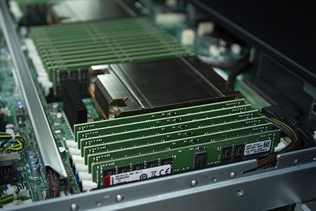

O que é um servidor?
Servidores são computadores ou sistemas computacionais que atendem requisições de dispositivos clientes, através de uma ou mais redes (locais ou remotas), capazes de executar aplicações (programas), prover processamento e/ou capacidade de armazenamento de dados.
O que é o Apache?
Apache é o servidor web livre criado em 1995 por um grupo de desenvolvedores da NCSA, tendo como base o servidor web NCSA HTTPd criado por Rob McCool.
O que é o Tomcat?
O Tomcat é um servidor web Java, mais especificamente, um container de servlets. O Tomcat implementa, dentre outras de menor relevância, as tecnologias Java Servlet e JavaServer Pages e não é um container Enterprise JavaBeans. Desenvolvido pela Apache Software Foundation, é distribuído como software livre.
O que é uma LAN?
Uma rede local (LAN) é uma rede contida em uma pequena área geográfica, geralmente dentro do mesmo edifício. As redes WiFi domésticas e as redes de pequenas empresas são exemplos comuns de LANs.
O que é uma MAN?
Uma rede de área metropolitana (MAN) é uma rede de computadores que conecta computadores dentro de uma área metropolitana, que pode ser uma única grande cidade, várias cidades e vilas, ou qualquer área com vários edifícios. Uma MAN é maior que uma rede local (LAN) mas é menor que uma rede de longa distância (WAN).
O que é uma WAN?
Uma rede de longa distância (WAN) é a tecnologia que conecta os escritórios, datacenters, aplicações e armazenamento em nuvem em conjunto.
O que é uma PAN?
Uma rede de área pessoal (PAN) conecta dispositivos eletrônicos dentro da área imediata de um usuário. O tamanho de uma PAN varia de alguns centímetros a alguns metros. Um dos exemplos mais comuns do mundo real de uma PAN é a conexão entre um fone de ouvido Bluetooth e um smartphone.